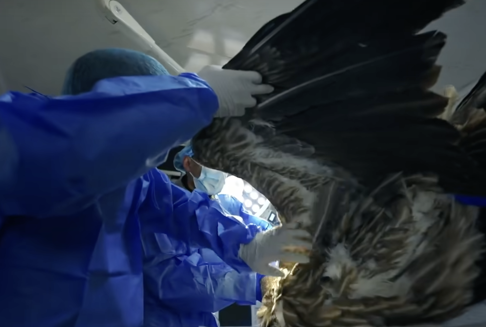
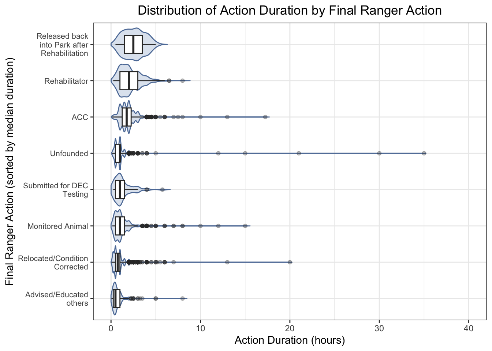
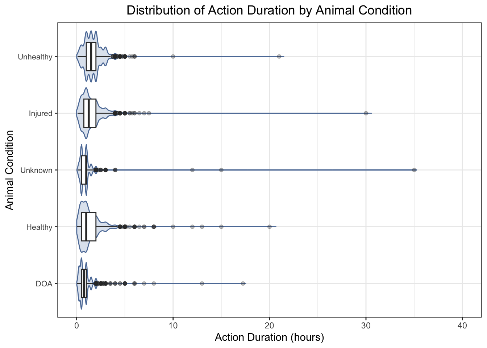
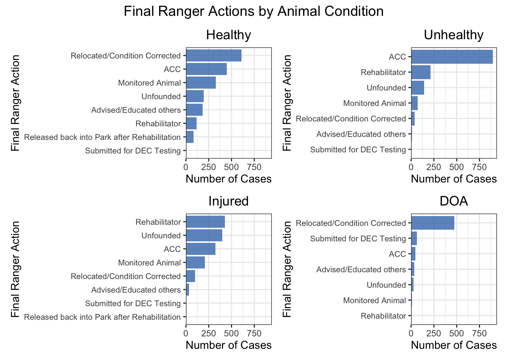
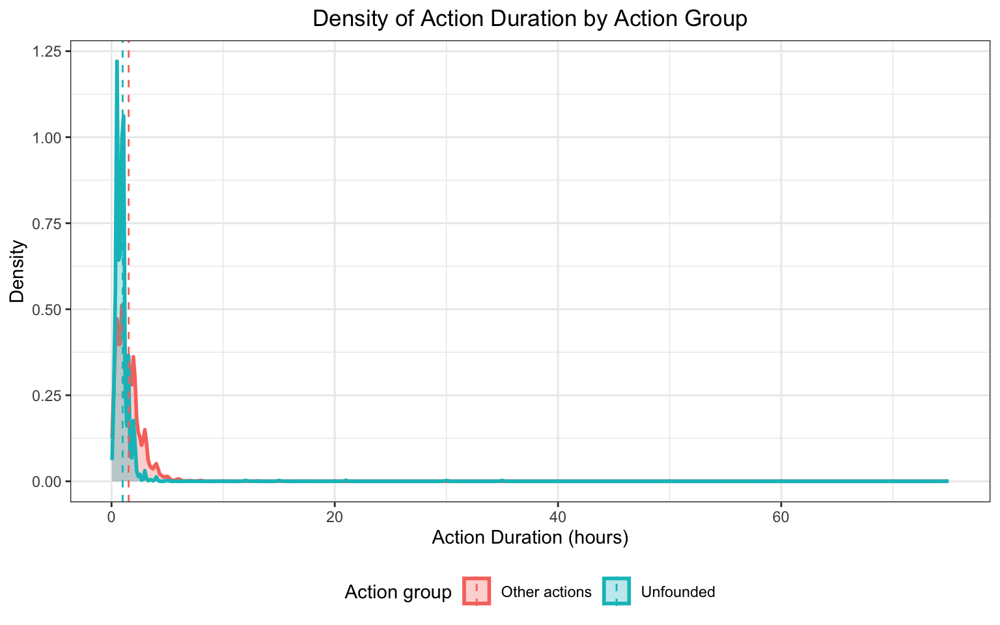
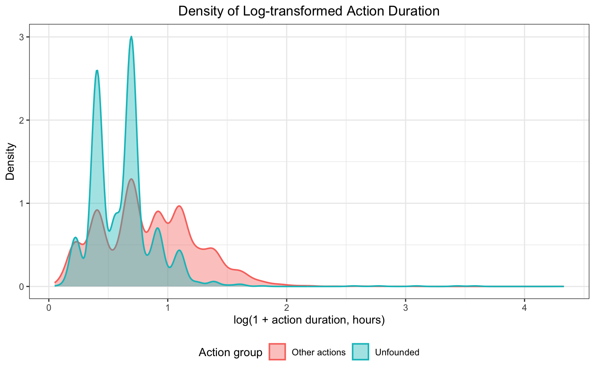
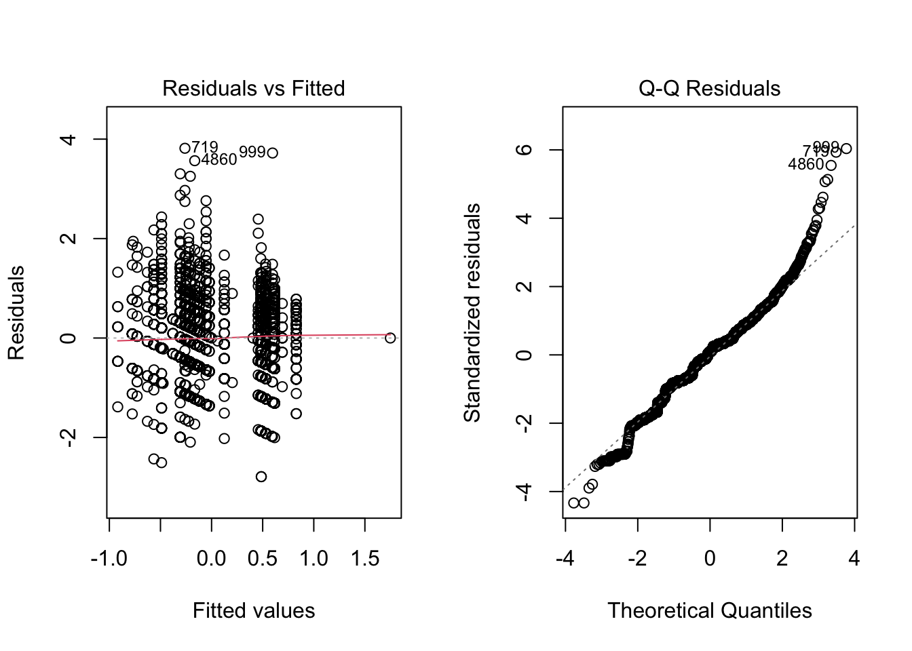
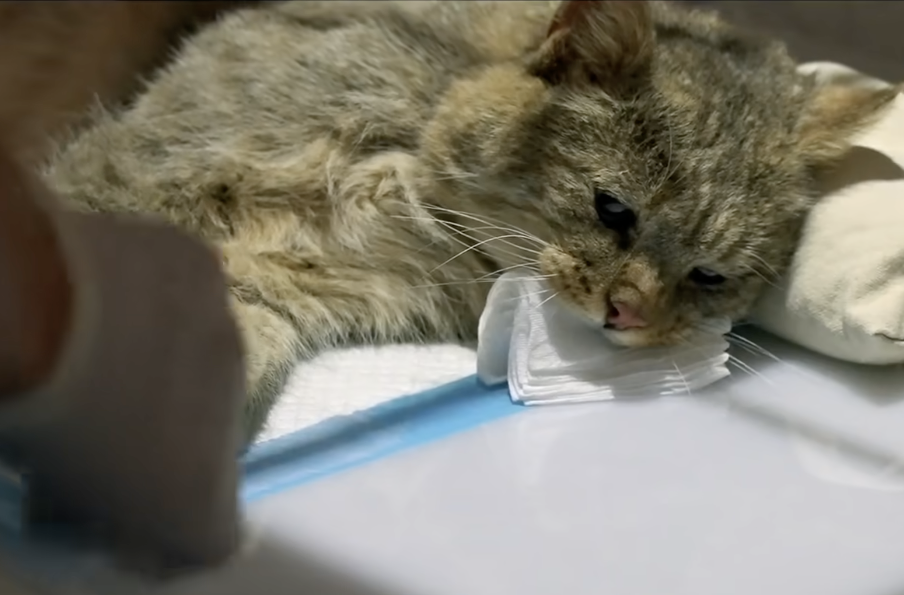

Final Action

Image Credits: the Documentary XiYe
We examined action duration and final ranger actions to understand how different types of wildlife incidents demand time and effort from Urban Park Rangers. By comparing duration across action types, animal conditions, and action–condition combinations, we can identify which situations require intensive intervention, which are resolved quickly, and where uncertainty or coordination challenges lead to variability. Assessing distribution patterns and statistical differences also helps clarify operational drivers behind long responses and supports more informed planning and resource allocation within the ranger system.
Action Duration by Final Ranger Action
park_model = park_ranger_new |>
rename(num_animals = matches("animals")) |>
mutate(
duration_hours = as.numeric(duration_of_action),
num_animals = as.numeric(num_animals)
) |>
filter(
!is.na(duration_hours),
duration_hours > 0,
!is.na(final_ranger_action),
!is.na(animal_condition),
!is.na(num_animals),
num_animals >= 0
)
action_order <- park_model |>
group_by(final_ranger_action) |>
summarise(med = median(duration_hours, na.rm = TRUE)) |>
arrange(med) |>
pull(final_ranger_action)
park_model_action <- park_model |>
mutate(final_ranger_action = factor(final_ranger_action, levels = action_order))
ggplot(park_model_action, aes(x = final_ranger_action, y = duration_hours)) +
geom_violin(trim = FALSE, fill = "#BFCDE0", color = "#5D7CA6",
alpha = 0.5, scale = "width") +
geom_boxplot(width = 0.5, fill = "white", outlier.alpha = 0.3) +
coord_flip() +
scale_x_discrete(labels = function(x) str_wrap(x, width = 20)) +
ylim(0, 40) +
labs(
title = "Distribution of Action Duration by Final Ranger Action",
x = "Final Ranger Action (sorted by median duration)",
y = "Action Duration (hours)"
) +
theme_bw() +
theme(
plot.title = element_text(hjust = 0.5),
axis.text.y = element_text(size = 8)
)
The combined violin–boxplot shows clear differences in action
duration across ranger actions. The visualization is capped at 40 hours
to enhance focus on the central data distribution, noting that the
ACC category (Animal Care Center) contains one extreme
outlier with a duration exceeding 70 hours that is not displayed.
Rehabilitation-related actions take the longest. Categories such as
Released back into Park after RehabilitationandRehabilitatorhave the highest medians and widest spreads, reflecting the need for assessment, coordination with rehabilitators, transport, and extended monitoring.Administrative or low-intervention actions are short. Actions like
Advised/Educated others,Submitted for DEC (Department of Environmental Conservation) Testing,Relocated/Condition CorrectedandMonitored Animalhave much shorter, tightly clustered durations, consistent with quick assessments or minor interventions.ACCandUnfoundedresponses show high variability.ACCtransfers sometimes take much longer due to coordination and handling challenges.Unfoundedcases are usually brief but occasionally long when searches, misreported calls, or verification require extra time.Outliers represent rare long-duration events. Several actions, especially
ACC,Unfounded, andRehabilitator, include outliers over 30 hours, likely due to long-term monitoring, repeated site visits, or delays in coordinating animal handoffs.
Action Duration by Animal Condition
park_model_cond <- park_model |>
mutate(
animal_condition = fct_reorder(
animal_condition,
duration_hours,
.fun = median,
na.rm = TRUE
)
)
ggplot(park_model_cond, aes(x = animal_condition, y = duration_hours)) +
geom_violin(trim = FALSE, fill = "#BFCDE0", color = "#5D7CA6",
alpha = 0.5, scale = "width") +
geom_boxplot(width = 0.5, fill = "white", outlier.alpha = 0.3) +
coord_flip() +
ylim(0, 40) +
labs(
title = "Distribution of Action Duration by Animal Condition",
x = "Animal Condition",
y = "Action Duration (hours)"
) +
theme_bw() +
theme(
plot.title = element_text(hjust = 0.5),
axis.text.y = element_text(size = 8)
)
The violin–boxplot shows how action duration differs
across animal conditions. The visualization is capped at 40 hours to
enhance focus on the central data distribution, noting that the
Unknown category contains one extreme outlier with a
duration exceeding 70 hours that is not displayed.
UnhealthyandInjuredanimals show substantial variability induration time, with the highest median durations. The wide distribution reflects the need for diverse handling, such asrehabilitator,ACCandmonitored.Unknownconditions show moderate dispersion with a low median. While most cases are resolved quickly, the variability suggests time is occasionally spent on investigation or clarifying the initial report.Healthyanimals exhibit the maximum variability inaction duration, despite having a low median. This wide spread is likely due to the diverse range of possible actions, such asrelocated,ACCandmonitored.DOA(Dead on Arrival) cases consistently require the minimal variability inaction duration, with the lowest median time. This is expected since mostDOAcases arerelocated/condition corrected.
Final Ranger Actions by Animal Condition
park_model4 <- park_model |>
filter(animal_condition %in% c("Healthy", "Unhealthy", "Injured", "DOA"))
plot_condition_bar <- function(data, cond, ymax) {
df <- data |>
filter(animal_condition == cond) |>
count(final_ranger_action) |>
arrange(n)
df$final_ranger_action <- factor(df$final_ranger_action,
levels = df$final_ranger_action)
ggplot(df, aes(x = final_ranger_action, y = n)) +
geom_col(fill = "#4F81BD", alpha = 0.85) +
coord_flip() +
scale_y_continuous(limits = c(0, ymax),
expand = expansion(mult = c(0, 0.05))) +
labs(
title = cond,
x = "Final Ranger Action",
y = "Number of Cases") +
theme_bw() +
theme(
plot.title = element_text(hjust = 0.5),
axis.text.y = element_text(size = 8))
}
max_cases <- park_model4 |>
count(animal_condition, final_ranger_action) |>
pull(n) |>
max()
p1 <- plot_condition_bar(park_model4, "Healthy", max_cases)
p2 <- plot_condition_bar(park_model4, "Unhealthy", max_cases)
p3 <- plot_condition_bar(park_model4, "Injured", max_cases)
p4 <- plot_condition_bar(park_model4, "DOA", max_cases)
(p1 | p2) /
(p3 | p4) +
plot_annotation(
title = 'Final Ranger Actions by Animal Condition',
theme = ggplot2::theme(
plot.title = ggplot2::element_text(
hjust = 0.5,
size = 14
)
)
)
The four-panel plot compares ranger actions across
animal conditions.
Healthyanimals: Most cases involveRelocated/Condition CorrectedorACC, reflecting simple removal from unsafe areas or routine transfer for evaluation. Rehabilitation-related actions are rare because healthy animals seldom require intensive care.Unhealthyanimals:ACCis the dominant response, followed byRehabilitator, consistent with the need for medical assessment or long-term care. Actions likeDEC Testingor relocation are infrequent, as relocation alone is usually inadequate for visibly unhealthy animals.Injuredanimals: Common actions includeRehabilitator,Unfounded, andACC. Injured animals often need hands-on treatment, while higherUnfoundedcounts suggest that some animals could not be located or had recovered by the time rangers arrived.DOAanimals:Relocated/Condition Correctedis the most frequent action, as dead animals primarily require removal from public spaces. OccasionalACCorDEC Testingcases reflect situations requiring identification or documentation before disposal.
Distribution of Action Duration by Action Group
park_model_group = park_model |>
mutate(
action_group = if_else(
final_ranger_action == "Unfounded",
"Unfounded",
"Other actions"
)
)
duration_mean = park_model_group |>
group_by(action_group) |>
summarise(
mean_duration = mean(duration_hours, na.rm = TRUE),
.groups = "drop"
)
duration_mean |>
knitr::kable(
digits = 3,
caption = "Mean Duration by Action Group",
align = "c"
)| action_group | mean_duration |
|---|---|
| Other actions | 1.537 |
| Unfounded | 0.995 |
Density of Raw Action Duration
ggplot(park_model_group, aes(x = duration_hours,
fill = action_group,
color = action_group)) +
geom_density(alpha = 0.3, adjust = 1, linewidth = 1) +
geom_vline(data = duration_mean,
aes(xintercept = mean_duration, color = action_group),
linewidth = 0.5, linetype = "dashed") +
labs(
title = "Density of Action Duration by Action Group",
x = "Action Duration (hours)",
y = "Density",
fill = "Action group",
color = "Action group"
) +
theme_bw() +
theme(
plot.title = element_text(hjust = 0.5),
legend.position = "bottom"
)
The first density plot shows that the distribution of raw
action duration is extremely right-skewed, with most
incidents resolved within a short time but a small number taking many
hours. This heavy skew makes it difficult to visually compare cases with
all other ranger actions on the original scale because the
long tail compresses the main density near zero.
Density of Log-Transformed Action Duration
park_model2_log = park_model_group |>
mutate(duration_log = log1p(duration_hours)) # log(1 + x)
ggplot(park_model2_log,
aes(x = duration_log, fill = action_group, color = action_group)) +
geom_density(alpha = 0.4, adjust = 1, linewidth = 0.7) +
labs(
title = "Density of Log-transformed Action Duration",
x = "log(1 + action duration, hours)",
y = "Density",
fill = "Action group",
color = "Action group"
) +
theme_bw() +
theme(
plot.title = element_text(hjust = 0.5),
legend.position = "bottom"
)
To improve interpretability, we applied a
log (1 + duration) transformation, which compresses long
outliers and spreads the dense cluster near zero.
Unfoundedcases: These show higher density at lowerlog-durationvalues, indicating they are typically resolved quickly. Their mean duration is about 1.0 hour, confirming short response times.Other actions: These have a broader distribution and greater density at higherlog-durationvalues, reflecting the additional time required for assessment, handling, or coordination. Their mean duration is higher at 1.52 hours.
ANOVA Models for Action Duration
Using Raw Duration
anova_fit = aov(
duration_hours ~ final_ranger_action * animal_condition + num_animals,
data = park_model
)
anova_raw_tbl <- broom::tidy(anova_fit) |>
select(
term,
Df = df,
`Sum Sq` = sumsq,
`Mean Sq` = meansq,
`F value` = statistic,
`Pr(>F)` = p.value
)
knitr::kable(
anova_raw_tbl,
digits = 3,
caption = "ANOVA table for raw action duration",
align = "c"
)| term | Df | Sum Sq | Mean Sq | F value | Pr(>F) |
|---|---|---|---|---|---|
| final_ranger_action | 7 | 1518.595 | 216.942 | 97.825 | 0.000 |
| animal_condition | 4 | 6.266 | 1.566 | 0.706 | 0.588 |
| num_animals | 1 | 4.267 | 4.267 | 1.924 | 0.165 |
| final_ranger_action:animal_condition | 24 | 492.264 | 20.511 | 9.249 | 0.000 |
| Residuals | 6127 | 13587.609 | 2.218 | NA | NA |
par(mfrow = c(1, 2))
plot(anova_fit, which = 1)
plot(anova_fit, which = 2) 
par(mfrow = c(1, 1))The original model: \(\texttt{duration_hours} \sim \texttt{final_ranger_action} * \texttt{animal_condition} + \texttt{num_animals}\)
Final ranger actionis highly significant (p < 2e-16), indicating strong variation across action types.Animal conditionis not significant (p = 0.46) in the raw model.Number of animalshas no effect (p = 0.80).The interaction is significant (p = 0.000165), meaning the impact of
action typedepends on theanimal’s condition.These diagnostic plots indicate that the ANOVA model assumptions are severely violated, exhibiting both non-normally distributed residuals (as points deviate strongly from the line in the Q-Q plot) and non-constant variance (as residuals show a noticeable pattern rather than random scatter in the Residuals vs Fitted plot).
Using Log-Transformed Duration
park_model2 = park_model |>
mutate(log_duration = log(duration_hours))
anova_fit_log = aov(
log_duration ~ final_ranger_action * animal_condition + num_animals,
data = park_model2
)
anova_log_tbl <- broom::tidy(anova_fit_log) |>
select(
term,
Df = df,
`Sum Sq` = sumsq,
`Mean Sq` = meansq,
`F value` = statistic,
`Pr(>F)` = p.value
)
knitr::kable(
anova_log_tbl,
digits = 3,
caption = "ANOVA Table for Log-transformed Action Duration",
align = "c"
)| term | Df | Sum Sq | Mean Sq | F value | Pr(>F) |
|---|---|---|---|---|---|
| final_ranger_action | 7 | 1037.528 | 148.218 | 357.609 | 0.000 |
| animal_condition | 4 | 7.851 | 1.963 | 4.736 | 0.001 |
| num_animals | 1 | 0.648 | 0.648 | 1.564 | 0.211 |
| final_ranger_action:animal_condition | 24 | 29.083 | 1.212 | 2.924 | 0.000 |
| Residuals | 6127 | 2539.457 | 0.414 | NA | NA |
par(mfrow = c(1, 2))
plot(anova_fit_log, which = 1) # Residuals vs Fitted
plot(anova_fit_log, which = 2) # Normal Q-Q
par(mfrow = c(1, 1))Because action duration is highly right-skewed with many
long outliers, the raw ANOVA violated assumptions. A log transformation
was applied to stabilize variance and improve residual normality.
Model: \(\texttt{log(duration_hours)} \sim \texttt{final_ranger_action} * \texttt{animal_condition} + \texttt{num_animals}\)
Key results:
Final ranger actionremains highly significant (p < 2e-16), indicating persistent differences in duration across action types.Animal conditionbecomes significant (p = 0.000416), meaning condition effects become clearer after reducing skewness.Number of animalsis still non-significant (p = 0.27).The interaction remains significant (p = 7.3e-07), showing that the effect of action type varies by condition.
The log transformation reduces extreme values and spreads out lower durations, yielding more homogeneous variance and more normally distributed residuals. Diagnostic plots show steadier variance and a Q–Q plot much closer to the reference line, with minor tail deviations expected in field data.

Image Credits: the Documentary XiYe